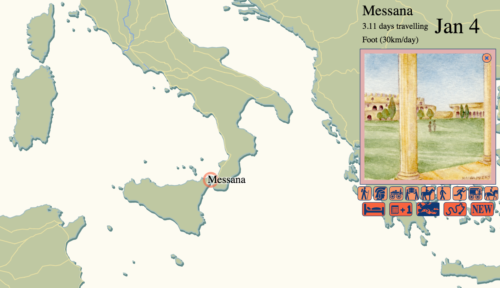

From the original site
This archived piece preserves its original text and historical context.
ORBIS|via
Built in a week right after the release of ORBIS v1, this was meant to provide a gameplay-inspired view into the transportation network that ORBIS relies on. It includes hand-painted scenes for the sites and traveling, as well as a variety of icons for the actions. ORBIS|via is notable for being an entirely D3 application, a first for me, and uses some horrible techniques, such as svg:foreignObject and duplicating the landforms to create the embossed effect.

What went right
The look is right, and the scenes are great.
What went wrong
There is no true gameplay element. Nobody would play a game that offered no reward or conflict, and |via really needed dysentery or swollen rivers. The challenge of providing a meaningful ludic layer on top of the ORBIS network is not an insurmountable one, but it was for the limited time frame devoted to this development.
After the ORBIS network was modified for v2, it broke the expected structure that drives |via, and now you can only travel along roads.
The next version would have
A Carmen Sandiego vibe.